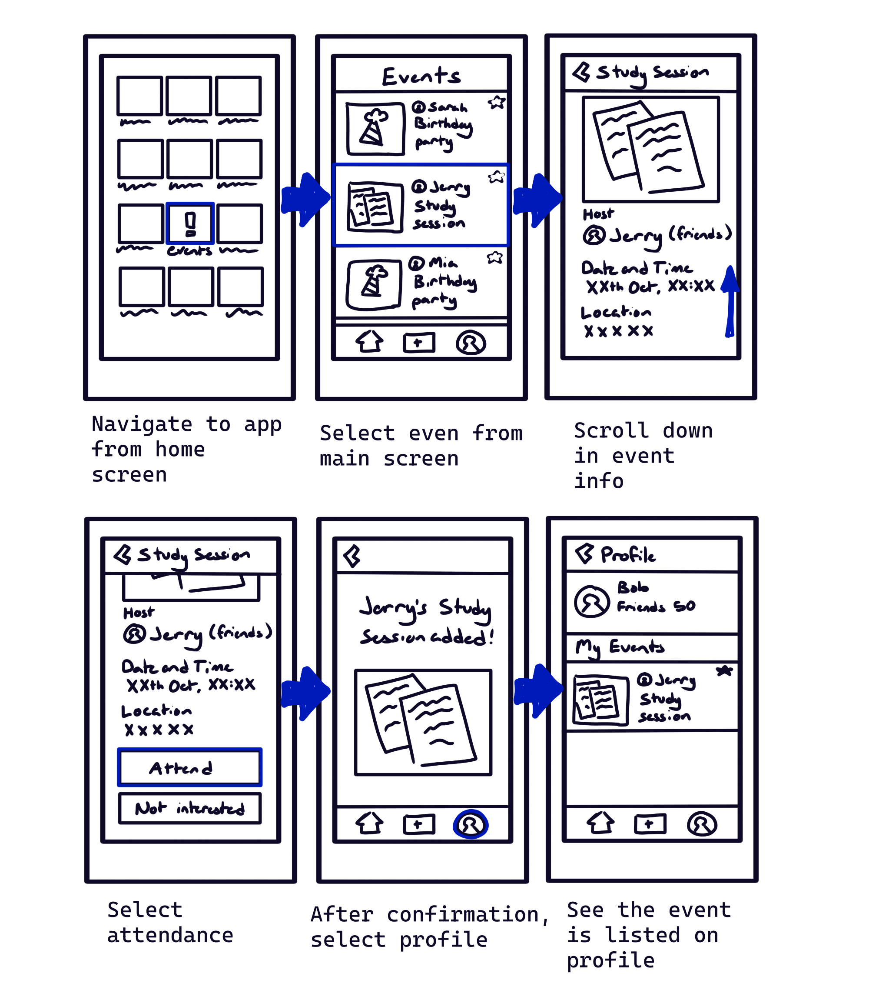
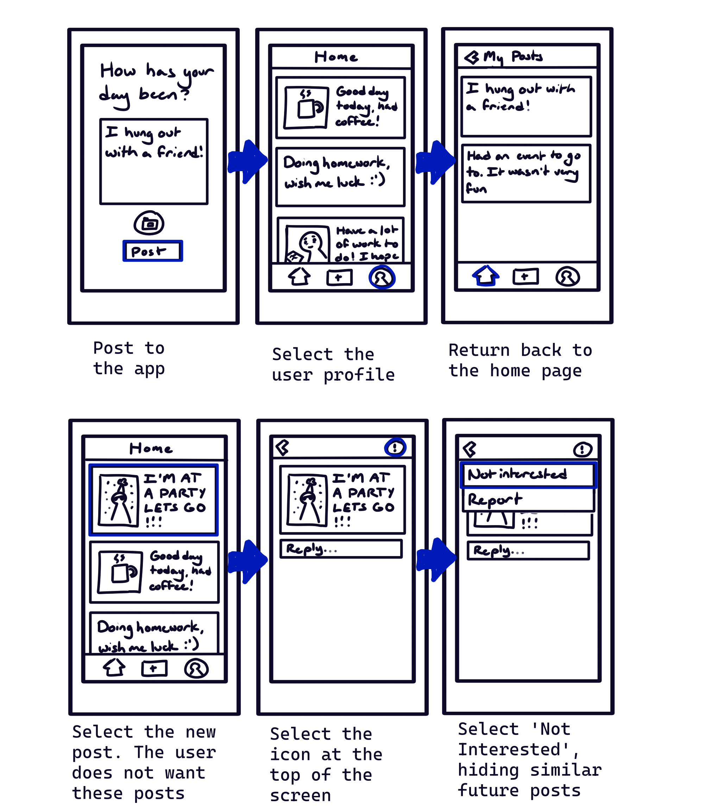
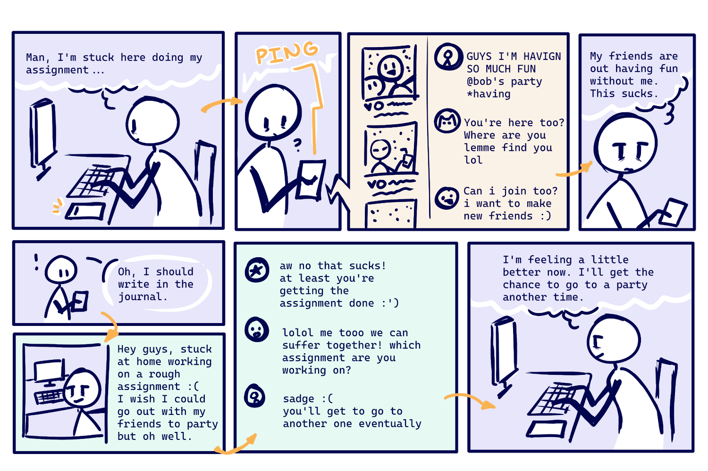
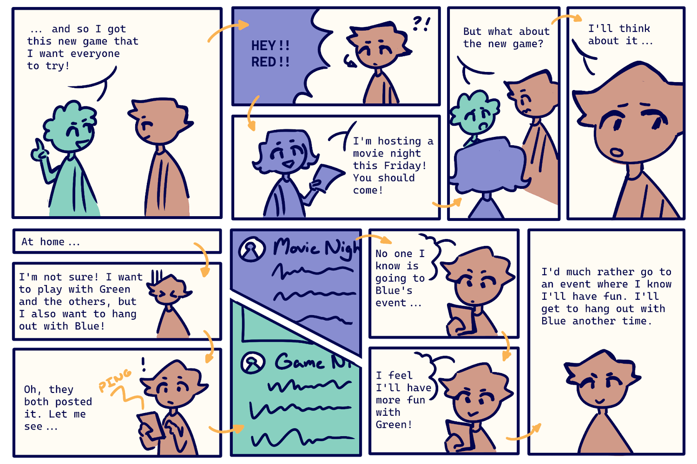

The Design of Interactive Computation Media
September 2023 - December 2023
This course
set out to teach students the UX/UI design process from the ground up.
From user research to prototyping, this course aimed to give students the tools
to design interactive media that is both user-friendly and visually appealing.
Project Goals
My group decided to attempt to tackle the issue of FOMO, creating a social media app
that focused on appreciating common everyday moments.
My Contributions
- Researched the phenomena of FOMO such that we would have a more concrete understanding of the phenomenon
- Created job stories to represent users who experience FOMO:
- “When I am made aware of a social event that
my friends are attending and that is of interest
to me, I want to attend that event so I can have
experiences that are meaningful to me.”
- “When I see a social event that I am missing
out on via social media, I want to be involved
with that event so that I can feel better about
my own experiences and not feel left out.”
- “When I feel that I am missing out on a social
event, I want to instead think about the important
reasons that I didn't attend so that I don't
feel as bad about missing out.”
- “When I make plans to host a social event,
I need to consider how other parties feel and
their availability so that they don't feel
excluded thus putting a strain on our
relationship.”
- “When I have multiple choices of attending
social events, I need to consider which event
interests me more and who is going there so
that I can get a more meaningful experience
from the event.”
- Created storyboards to represent our users:




- Conducted and recorded data of usability testing
- Created user questionnaires
- Writing up project reports to log our progress